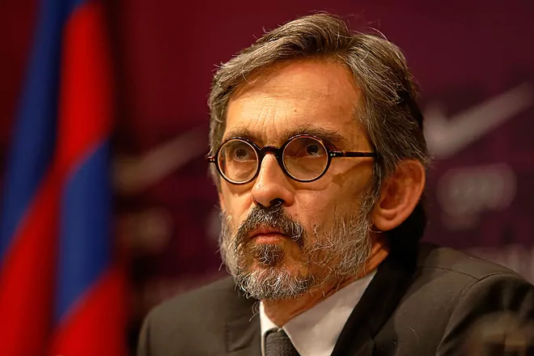

El jugador Dani Alves ha decidido "reforzar" su defensa penal con uno de los abogados más reputados de Barcelona. El letrado Cristóbal Martell será el responsable de representar al brasileño en los tribunales y su primera misión será intentar que salga de prisión. Para ello, presentará un recurso en las próximas horas ante el propio Juzgado de Instrucción número 15 de Barcelona y otro subsidiario a la Audiencia de Barcelona en el que solicitará la libertad de Alves a cambio de la imposición de otras medidas, como una fianza, la retirada del pasaporte o prohibición de salir de España.
Martell es un reputado penalista que ha defendido, en el inicio de la causa por fraude fiscal a Leo Messi y a su padre, a la familia Pujol y numerosos empresarios y políticos españoles, como en el 'caso Nóos', contra Iñaki Urdangarín. Tiene una amplia trayectoria y numerosos contactos en la judicatura.
El abogado llevará la defensa junto con la actual letrada de Alves, Miraida Puente Wilson, quien lo asistió en su declaración el viernes pasado. En un comunicado, esta abogada señaló que ha prestado "servicios profesionales en las distintas empresas y actividades mercantiles" de Alves y que lo acompañó cuando voluntariamente compareció ante los Mossos d'Esquadra "a prestar declaración y defender su inocencia.
